യോസേഫ് ചരിത്രം
യാക്കോബ തിരിച്ചെത്തിത്തന് പിതൃനിവാസത്തില്
പാക്കവേ യിസ്ഹാക്കിന്നു മരണം ഭവിച്ചതും
തത്സുതന്മാരായ്മള്ളൊരേഷാവും യാക്കോബനും
മാത്സര്യമെന്നേയേ ചേര്ന്നു സംസ്കാരം കഴിച്ചതും
അത്ത ഭാഗത്തേററം വിവരിച്ചരച്ചിട്ട--
ണ്ടതിന്നു പിന്പുണ്ടായ വ്ൃത്തങ്ങടം ശ്രദ്ധേയങ്ങടം.-
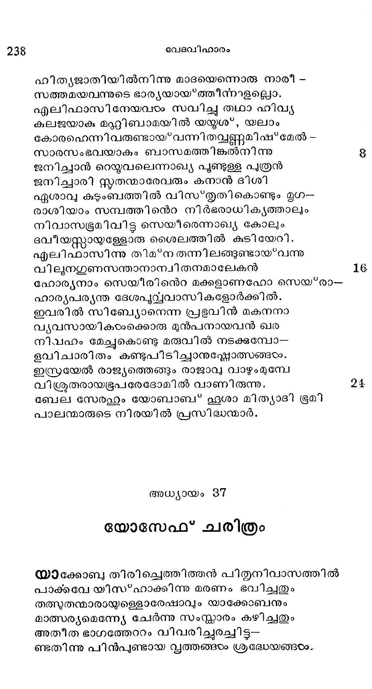
ബെന്യമിന്നുടെ ജ്യേ്മാസോദരന് യോസേഫിനെ--
യന്യാത്മജാതന്മാരിലൊക്കെയും പ്രിയതയാ
ഗണിച്ചുവന്തു താതന്; തന്നുടെ വാര്ദ്ധകൃത്തില്
ജനിച്ചു മകനാകമൂല, മായതു ശീലം.
അവനെറ രൂപഗുണ സമൃദ്ധി നിരൂപിക്കി--
ലവര്ണ്യമെന്നുതന്നെ പറഞ്ഞിടംവു പാത്താൽ.
സുവര്ണ്ണതുല്യമായ ദേഹകാന്തിയാല് ലോകം
വിീവര്ണ്ണമാക്കിത്തീര്ക്കുന്നായവ നെത്തല്ലിലും
കറുത്ത പട്ടതുലിന് ശോഭയേ ജയിക്കുന്നു
ശിരസ്സില് നിബിഡമായ വളരും കുന്തളങ്ടാം.
ബാലചന്ദ്രന്നു ലജ്ജ നല്കീടും നെററിത്തടം
ശ്രീലമാംവിധം ബല്യവിസ' ഭൂതി പൂണ്ടിരിപ്പൂ.
കണ്ണുകയം സ്റ്റടക സങ്കാശമാം സരസ്ത്കിലു-
ഉളണ്ഡജ ദ്വയംഭപോലെ ഭംഗിയായിളകുന്നൂ
ഗാംഭീര്യ വിനയവും സ്നേഹവും ശാസനയ--
മാംഭോജായതമാ മക്കഷണ്കളില് ക്കാണാകുന്നു.
ചെമ്പവിഴാധരോഷ്ടഷ പക്വങ്ങടം കൊത്തിത്തിന്മാ-
നമ്പരന്നുടുത്തിതാ നാസയാം ശുകിനില്പു.
തൂമുത്തിനുള്ള കാന്തി ജയിക്കും രദങ്ങളം
ശ്രീമത്താം ചുണ്ടുകളം മന്യോന്യം മത്സരിച്ചു
സാച്ഛവിയിത രാംഗത്തിന്നുമേല് തട്ടിച്ചുകൊ--
ഞ്ടച്ഛമാം പരഭാഗാല് ജേതൃത്വം നേടീടുന്നു.
ആശയമെന്നപോലെ വിശാലം വക്ഷന്മടം
പ്രാംശുത വിചാരിച്ചാല് സാലവും നാണിച്ചിടും
മുട്ടോളം നിണ്ടിറങ്ങിക്കിടക്കും കൈകം സമ-
സ്ൃഷ്മഷിയേ വീഴ്ചയില് നിന്നുയത്താനല്ലേ പാക്കില് ?
ജംഘകളടെ ഭംഗി ചിന്തിക്കിൽ സ്രഷ്യാവിനന്െറ
തുംഗസന്ദേര്യപ്പെട്ടിയിവതന് നിര്മ്മിതിയാല്
ശൂന്യമായ് ത്തീര്ന്നുവെന്നു കല്ലിക്കുമാരും മഹാ
ദൈന്യമേലുന്നൂ സ്ഥലപത്മവും പാടദങ്ങളാല്.
ഈ വിധമാണവന്നു വര്ണ്ണനാപാത്രം തുള്ളി --
വുന്ന മുട്ടിൽ കവിഞ്ഞൊഴുകും സഴകേമാര്യം.
ഏതൊരുത്തനും ദേഹചാരുത കാംക്ഷണീയ
സാധനമെന്നാകിലും പ്രജ്ഞയാണതി കാമ്യം.
ആകാര ഭംഗിമാത്രമുളളവന് ഗന്ധശ്ന്യ--
മാകുന്ന കിംശുകത്തിന് പൂപോലെ നിസ്റ്റാരനാം.
ആകൃതി ശ്രൈഷ്മ്യം മാത്രമല്പത്ര യൂസ്പന്നു ന-
ല്വാകാരസദൃൃശിയാം പ്രജ്ഞയ്യമുണ്ടു പാത്താല്.
പ്രജ്ഞ തക്കതായോരാഗമമതും ശാസ്ത്രാ--
ഭിജ്ഞതണ്കൊത്ത നല്ലോരാരംഭ പ്രയത്നവും
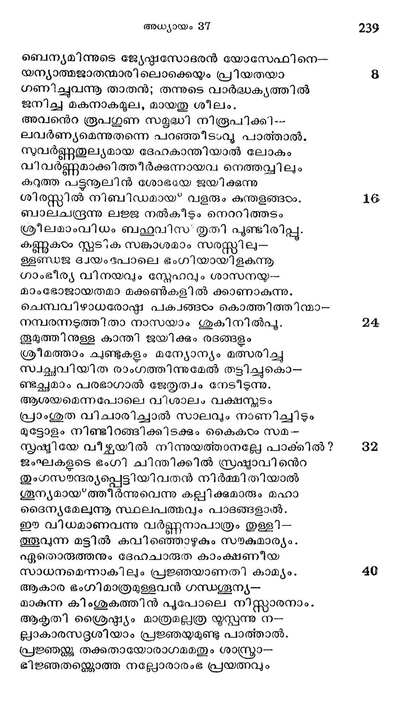
ആരംഭമതിന്നനുസാരമാം ഫലോദയ-
മാരുചിരാംഗന് തന്നിലുണ്ടിവയെലും ഭംഗ്യാ.
സത്യ, മാര്ജ്ജവം, നീതി. നിമ്മലബുദ്ധി, ധൈര്യം,
സത്യമാം സുജന സമ്മാനിത, സമാധാനം,
ശര്രുപ്ന്ദത്തില് ക്ഷാന്തി, നിസ്വപങക്തിയില് ദയ.
മിത്രവശ്ശൂരത്തില് സ്നേഹ, മീശപാടത്തില് ഭക്തി,
മാതാവു പിതാവാദി ഗുരുസംഘത്തില് ഭയം
ത്രാതാവാകിലും തെൊററു കണ്ടാകിൽ പ്രതിഷേധം.
ഇത്യാദി മഹനീയ ഗുണസഞ്ചയം മൂല--
മത്യാദരാത്മായസ്പനഭി ശോഭിച്ചിരുന്നു.
അടദസീയമാം ഗുണഗണങ്ങടരം കാണുകയാല്
മുദമാര്ന്നവനുടെ ജനകന് പ്രേമാകുലന്
നല്ലിനാനവന്ൊൊരു ചിത്ര വര്ണ്ണോത്തരീയം
പുല്ലിയില്ലതിനാലും കിഞ്ചനമദം യൂസ്്പന്.
ഇവനെറ പുവ്വജന്മാര് സൽഗുണ സസ്യങ്ങടംക്കു
സുവ്ൃത്തി നല്കാതുള്ള ധന്വചിത്തരായ*നിന്നാര്.
പിതാവ ചിത്രവസ്ത്രം നല്കുക മൂലം ജ്യേഷ്ഷര്
നിതാന്തമീര്ഷ്യ പൂണ്ടാര് കനിഷ്ഷ സോദര്യനില്.
ഭൂഷ്ടത പ്രവര്ത്തിക്കില് ശരിയല്ലെന്നു യൂസ്്പന്
സ്പഷ്ടമോതിടുന്നേരം പീഡനന്്റ്റായത്തുനിഞ്ഞിടും
സ്മരിതാഭമവന് ചോദ്യം വല്ലതും ചോദിജ്കുകില്
ഗൃതാതിക്രധയോട നല്കിടും പ്രതിവാക്യം
സോദരഭുരാചാരം താരതനേയറിയിച്ചു
ഭദമുണ്ടാക്കാന് യൂസ്പപന് യത്നിക്കിലവരൊത്തു
ഭൂഷണ ശാപറദികടം വര്ഷിക്കുമെന്നാലവ
ഭൂഷണമായിയുസ്സന് ഗണിക്കും പിണക്കെന്യേ.
ഘോരമാം മരുവിലേ ത്താമരപ്പൊയ*കണ്റൊത്തും
കേതുക്കഠം നടുവിലേ ക്കഠോര ചന്ദ്രനൊത്തും
ശാഖോടമദ്ധ്യസ്ഥമാം കേരവ്വക്ഷത്തിന്നൊത്തും
ശോഭിച്ചു യോസേഫനിക്ശാഠ്യ ബുദ്ധികടം മദ്ധ്യ.
പിതൃുവാത്സല്യം, പാപസം രോധം, താതാഗ്രത്തില്
സുതരാം മനഃ ക്ലേശാൽ ഭ്രാത്രല നിവേദനം.
ഇവ കാരണം യ്സ്പന് നേക്കതി ശര്രുഭാവം
ദിവസംപ്രതി കാട്ടി സ്റ്റഗര്ഭ്യര്പോരും കാലം
യോസേഫനൊരു സ്വപ്പംകണ്ടു; താന്: സഭൂാതൃക--
മാസക്ത്യാശസ്യമുഷ്മിബന്ധം ചെയ്യൊരുന്നാടം
അപ്പൊഴുതി തരരിന് കററകടം തന്നുടയ
നല്ലെഴും കററയ്ക്കുഭിവന്ദനം ചെയ്ത സാക്ഷാല്
ഇക്കഥ യുസ്പന്, തന്െറ മനസ്സില് മറയ്ക്കാതെ
ചിക്കനേ സഗര്ഭ്ൃരോടറിയിച്ചതിശുദ്ധന്.
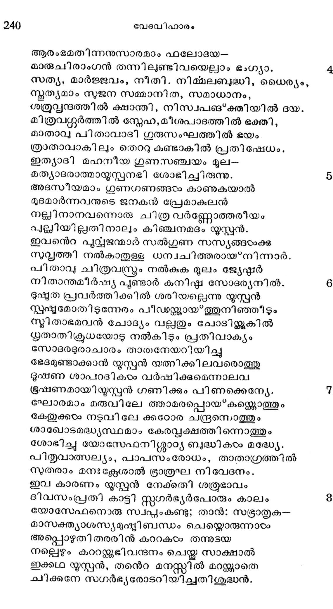
ആയതു വിരോധത്തിന് വേരുറപ്പിച്ച ശക്ത്യാ
മായിയാം രിപ്വിനോടോതരുതെല്ലാം ബുധന്.
സുര്ൃചന്ദ്രന്താര് പതിനൊന്നു നക്ഷത്രങ്ങഠം ചേ-
ന്ാര്യനാം യോസേഫിന്നു വന്നതി ചെയ്തതായി
പിന്നെയുമൊരു സ്വപ്പം കണ്ടി തായവനതും
ക്ലന്നമായ*വയ്ക്കാതച്ഛന് തന്നോടുമറിയിച്ചു.
ലേശവമിഷ്യമായില്ലച്ഛനു മതുകേട്ട
പേശിനാന് യോസേഫി നോടപ്പൊഴുതപ്രീതിയായ:
എന്തു നീ പറയുന്നു? ഞാനും നിന് സവിത്രിയ്യം
നിന്നുടെ സോദര്ൃയരു മൊന്നുചേര്ന്നശങ്കിതം
നിന്നുടി വണങ്ങുവാന് വരുമോ നിന് പാദത്തില്
വന്നെങ്ങഠം സാഷ്യാംഗമായ*വീഴുമോ ചന്തിക്കുക.
കുഞ്ഞേ! നീയെന്നുടയ വാത്സല്യപാത്ര,മെന്നാല്
മഞ്ജുളമല്ലിബ* ഭാവം, നിഗളം ദോഷാവഹം
രഞ്ജനകുറയുന്നു ഡംഭിീയില് മനുഷ്യര്ക്കു
കജ്ജളംപിടിപെട്ടാല് സ്വര്ണ്ണവും നിഷ'*പ്രകാശം.
ഈവിധമല്ലുന് ചൊന്നുവങ്കില മാവിചാരം
പാവനചിത്തതയാലള്ളില് നിന്നുടന് പോയി.
എന്തനാഭരം മക്കഠം കാണിച്ചുവെന്നാകിലും
തന്തമാരതു മറന്നിീടുന്നു പാടെന്നിയേ
എന്നിരിക്കിലും ജ്യേഷ്ഠഭ്രാതാക്കയംക്കതി വൈര-
മന്ദിരമായിത്തീര്ന്തു യോസേഫിന് സ്വപ്പംരങ്ടും.
വിരോധമൊരുനൂൂറു മടങ്ങായ* വര്ദ്ധിച്ചിതു
സരോജാലങ്ങഠം വര്ഷാവൈഭവം കൊണ്ടെന്നപോല്
ഒരിക്കലി വര് ഭൂരെയൊരിടത്താടുകളെ
ഭരിച്ചു മേച്ചദിനം കഴിക്കും തരുണത്തില്
വരിഷ്ടക ബുദ്ധിയാകും യൂസ്പനേ വിളിച്ചിട്ടു
ഗരിഷ്ഠപ്രേമാവിഷ്യന് ജനകനരുഠം ചെയ്ത:
വത്സ! നീയിവിടെ നിന്നുടനേ പുറപ്പെടു
ത്വതസഹോദരന്മാരീന് നി വേശമാകും ശേഖേം
നാട്ടി ലെത്തിയിട്ടവര് ക്ഷേമമന്വേഷിച്ചാട്ടി ന്--
കൂടുത്തിന് കുശലവ മറിഞ്ഞു വരികെടോ.
ഉടനേ പുറപ്പെട്ടാന് ഹെബ്രോനില്നിന്നു യൃസ്പന്
തടവെന്നിയെ യാത്ര തുടര്ന്നാന് മടിക്കാതെ.
ആരംഭഘുട്ടം നരജീവിതസമം സുഖ--
വുരമായ*ത്തോന്നി യെന്നാല് പിന്നിട്ട യാത്രാക്ലേശം
ധാരാളമുദിച്ചിതു യോസേഫിനെങ്കിലും തന്
പേരാളം സഹജാതദി ദൂക്ഷ വദ്ധിക്കയാല്
ഘോരമാമരണ്യങ്ങഠം വെളിഭ്രമിയായത്തോന്നി
ക്രൂരസതംങങ്ങളെല്ലാം ഗൃഹജീവികളായി
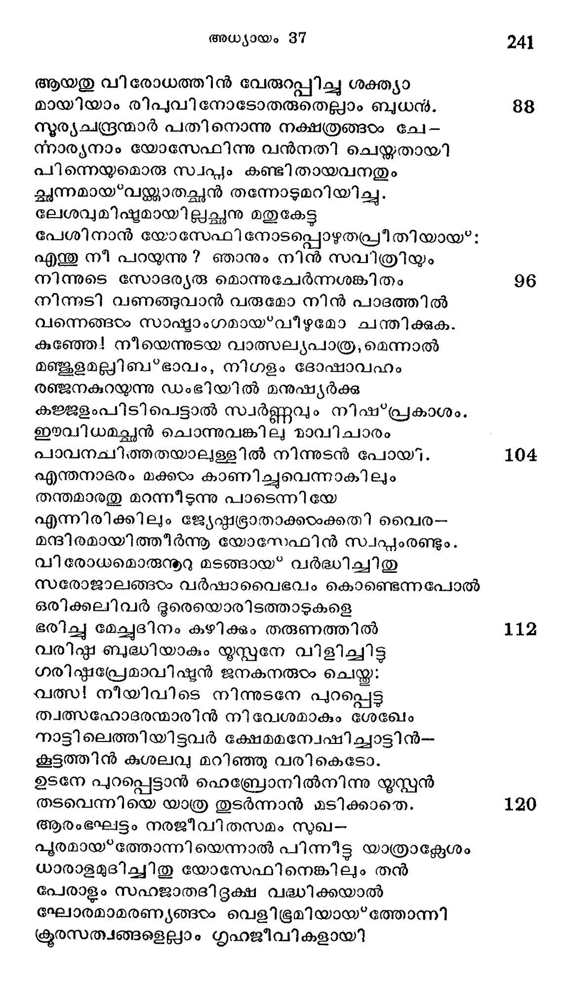
ഇടുക്കുവഴിപാരം വിശാലസ്ഥലമായി
കടുത്തവെയില് ശീതജലധോരണിയായി.
കുടിക്കാന് വെള്ളമില്ലാ മരുഭൂമികടം ദാഹം-
കൊടുക്കും തണ്ണീരപ്പന്തല്നിരയായ് ഭവിച്ചിതു.
പൊടുക്കെന്നവനെത്തി ശ്ലേഖമില് ചിലനര-
രടത്തപോതു ചോദിച്ചാത്മ സോദര്യവാസം.
ഉത്തരം കൊടുത്തൊരാളെ വിടാണവരെന്നു
സത്വരം പറയുവാനാവതല്ലെന്നാകിലും
ദോതനിൽല് പോകനാമെന്നായവരുരള്കകുതു
കാതില് വീണതായോര്മ്മിക്കുന്നു ഞാനതുമൂലം
പോവുക ദോതനെന്നദിക്കിന്നു സഭഭസം
ഭാവുകമാറ്റ്റണാത്ഥം സോദരമേഷങ്ങളിന്.
ഇതു കേട്ടപ്പോഠം ദഭീര്ഘയാത്രയാലതി ക്ലിഷ്ട-
പദനാം യോസേഫിന്നു സംവേഗമുണ്ടായ*പാരം.
എനിയും ദോതാന്വരെ നടക്കുന്നതു പുണ്ണില്
കനിവില്ലാതെ കമ്പു കടത്തും കണക്കത്രേ.
എന്നിരിക്കിലും പിതൃവാക്യവും നിജകൃത്യ -
മെന്നതിലള്ള നിഷ്ടഠാശക്തിയും സ്വസോദര -
ധന്ൃയവഭ്രതാബ*ജം കാണ്മാനുള്ളൊരു താല്പര്യവും
പുണ്യമത്ത്യനാമവന് തന്നുടെ ഹൃദയത്തില്
കടന്നു ശക്തിയായി വ്യാപരിക്കയാല് തന--
തുടമ്പിന്നുള്ള ദൈന്യമോരാതെ ദോതാനിന്നു
നടന്നാന് മൃദുശീ ലമുള്ളോരീ യുവസിദ്ധന്
തുടര്ന്നു യാത്ര ചെയ്തങ്ങൊടുവിലെത്തീടി നാന്.
നെടുതാം സഞ്ചാരത്താ ലമിതക്റാന്തിപൂണ്ടു
തുടുത്തു വീങ്ങിനില*ക്കും പിഞ്ചുപാദങ്ങളോടും
താമരയിതളിലുളള സംഖ്യകണങ്ങടംപോല്
കോമള മുഖത്തേലും സ്വേദബിന്ദുക്കളോടും
വിശന്നു വയറേററം പാററിയും ദാഹാല് തൊണ്ട-
വരണ്ടു ചുണ്ടു രണ്ടു മുണങ്ങിക്കരിഞ്ഞും ഹാ!
വെയിലില് വാട” ത്തളര്ന്നെങ്കിലും സ്വസോദര--
ക്കിയലും മുഖം കണ്ടു സന്തുഷ്ട ചിത്തനായും
വരുന്ന കനിഷ്ഷനെക്കണ്ടപോതവക്കൊരു
കരുണതോന്നിയില്ലെന്നുള്ളതു മാത്രമല്ല
സ്വപ്പദര്ശിയാമിവന് തന്നുടെ കഥയിപ്പോഠം
സ്വപ്പമാക്കണം സഭ്യോവധത്താല് പിന്നവന്െറ
സ്വപ്പങ്ങടം ഫലിപ്പതു കണ്ടിടാം നമുക്കെന്നു
ശപ്ലബദ്ധികളാലോചിക്കയ്യം ചെയ്താരുടന്.
ഇതു കേട്ടരചെയ്താന് രൂബനാം മൂത്ത ജ്യേറ്മന്
മതിഹീനരേ! ബാലവധം നാം പെയ്തീടൊല്ലാ.
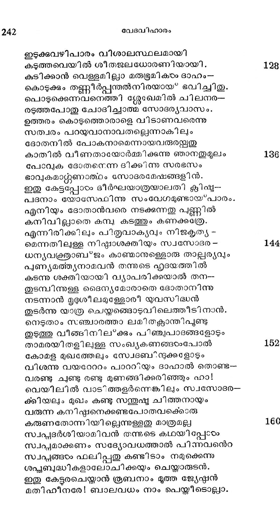
പാതകങ്ങളില്തി പാതകം കൊലയത്രേ
വാദമിലതിലേറാം കഠിനം ബാലഹത്യാ.
പതി നേഴാണിവനെറ വയസ്സ, പിതൃ ജീവന്
പതിഞ്ഞു കിടക്കുന്നു പാതിയുമിവന്മിീതില്.
അതിനാല് കഥയിതു കേടംക്കുമ്പോടം ജനനന് ഹാ
മൃതിയില് പെട്ടുപോകും സങ്കടാബ്ദബിയില് മുങ്ങി.
കാരണമതിന്നു നാമുള വാക്കീടാതിപപ്പോ--
ഭാരണന്മാരേ! നിങ്ങടം ശാന്തന കൈക്കൊള്ളവിന്.
ഇടദമാകര്ണ്യ ചൊന്നാരഗ്രജരാകുന്ന നാം
വിദുരനാകുമനല് പിതാവുമായി ച്ചേര്ന്നു
കന്യസനാമവന്റ കാലിണ വണങ്ങുമെ-
ന്നന്ൃയസിദ്ധമല്ാത്ത മദമോട രച്ചില്ലേ?
അങ്ങിനെയുള്ള ബന്ധുദ്രോഹിയേഭ്ധരണിയിൽല്
തങ്ങുവാനനുവദിച്ചീടരുതൊരുനാളം.
രൂബനോതിനാനെന്തു ? നിങ്ങയാക്കു മാത്രമിതില്
കോപമേലുവാനൊരു കാരണമില്ലയല്ലോ.
എന്നെയും താതനേയ്യം ബാധിക്കും വിഷയത്തി--
ലെന്തിനു നിങ്ങടം തന്നേ കയ്യിടുന്നതു മിപ്പോഠം.
തത്സ്വപ്പം താതന് കേട്ട ശാസിച്ചുവെന്നാകിലും
ചിത്സ്വരൂപനന്െറ വല്ല നിര്ണ്ണയ വിശേഷവും
കണ്ടേക്കാമി തിലെന്നു പറഞ്ഞു ചിന്താപ്ൂവ്വം
മിണ്ടാതെയിരിക്കുന്നു ഗരവഭാവത്തൊടും
സത്സ്വഭാവിയാമന്യല് കനിഷ്ഷന് ചൊന്ന കാര്യം
മത്സരബദ്ധിമൂലം വരുവാനിടയില്ല.
കള്ളമോതുകയവന് ശൈലിയുമല്ലശേഷം
ഭള്ളവാക്കുരയ്കകാനുരം ത്തള്ളലുമവന്നില്ല.
ചിലപ്പോരം നാം പിണയ്ക്കും വല്വായ*മ ജനകനോ-
ടലജ്ജുമോതുന്നതുമൂലമാം യഷ് മദ്വൈരം.
നമുക്കു പ്രവര്ത്തിക്കാമെന്നാകി ലേകനതു
തമുക്കു മുഴക്കിയയല് ഘോഷിക്കി ലെന്തു ദോഷം ?
അന്യഥാ ചിന്തിക്കുവിന്, നമ്മുടെ സംസ്കാരാത്ഥം
തന്നെയാണച്ഛുനോട ചൊല്ലുവതന്യായങ്ങടം
നന്മക്കു വേണ്ടിയല്ല൦ വേദനയുണ്ടാക്കുമ്പോഴം
തിന്മയെന്നകതാരിലോരരുതൊരുവനും.
കത്തിയാല് വ്രണം കീറി ശ്ശൂരീയാക്ടുമ്പോരം ജീവ -
ഹത്യന്്കു ഭാവിക്കയാണെന്നാരും നിനയ്ക്കേണ്ടാ.
ദുഷ്കൃതദുമ്മേദസ്സ നശിച്ചീടാതെ മേലില്
സല്ക്ക്യ തകളേബരരാവില്ല പാപന്മാര് നാം.
രൂബനിങ്ങനെ യോതിയെങ്കിലും സഗര്ഭ്യരാം
രൂപമില്ലാത്ത കൂട്ടർ-മക്ടടമുഷ്ടിയേന്തി
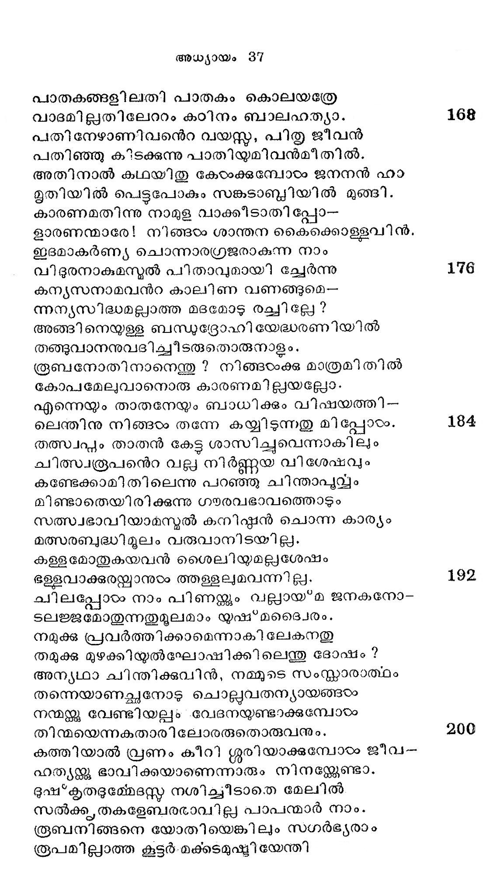
നമ്മോടു കാട്ടിയതി നേതാനുമൊരു ചെറ
കുമ്മലേകണ മല്ലാതടങ്ങുകില്ല ഞങ്ങംം.
വധമിങ്ങരുതെങ്കിലങ്ങിനെയാട്ടെ; മററ-
വിധമെന്തരുളവാന് തക്കൊരു പ്രതിക്രിയ
പുവ്വജജന് ചൊന്നീടണമായതീ യനുജന്മാര്
ഗലവ്യമെന്നിയേ കോടംക്കാമെന്നുര ചെയ്തീടിനാര്.
യാതൊരു വിധത്തിലും സോദരക്കമര്ഷത
യാതമാകയില്ലെന്നു കണ്ടപ്പോളഗ്രജാതന്
ചൊല്ലിനാൻ ശാഠ്ൃയബദ്ധി ശമിക്കയില്ലയെങ്കില്
തള്ളവിനിക്കൂപത്തിലനുജാതനേ നിങ്ങംം.
വാക്കിതു മുഴുവനും കോടംപ്പതിന് മുന്പു തന്നേ
ലാക്കി ലായവരെല്ലാം ചെന്നടുത്തനുജനേ--
പ്പിടിച്ച ശുസ്യകൂപം തന്നില് തള്ളവാന് ഭാവി--
ച്ടുത്തു ഹേമിച്ചവരാര്ദ്ദരതയല്പവമെന്നേയ.
തന്നുടെ നേരെയുള്ള കൂട്ടുകെട്ടപ്പൊഴത്രേ
പുണ്യപുരുഷനായ യൂഷഭനറിഞ്ഞുള്ള.
ഉടനേ കുമാരക നോതിനാന് കണ്ണീര് ചിന്തി
കടുതാം കുററമെന്മേലെന്തിതു ചെയ*വാന് നിങ്ങടം
പിതുരാജ്ഞയായഷ*മല്ക്കശലം തേടിയല്ലോ
പിതൃഗേഹത്തില്നിന്നു സംക്സിശ്യ പോന്നേനത്ര
നിങ്ങളെ സ്നേഹിച്ചിങ്ങു വന്നൊരീയനുജനു
നിങ്ങളേകുന്ന പാരിതോഷികമിതോ? പാക്കിൽ.
സോദരന്മാരിലൊരു കഠി നന് ചൊന്നാനേവംഃ:
സാദരം നിനക്കിവര് കഴിക്കും നതിയത്രേ
നിന്വാക്കിന്നനുസാരം നിനക്കു ലഭിപ്പതു
തന്വാക്കു തനിക്കാപത്തെന്നുള്ള തറിഞ്ഞാലും. 28
ഡംഭചാരിക്ംക്കണിമണിയാകിയ നിന്െറ
വന്പിതേക്ഴിയിലിനവസാനിക്കും ദൃഡം.
ഞങ്ങളും താതനും നിന് പാദത്തില് വീഴുമെന്നു
തുംഗാവലേപമോതാന് ലജ്ജ തോന്നിയോ തവ?
കര്ണ്ണാരുന്തുദമാകുമീ വചസ്തിന്നു യ്സ*പന്
കണ്ണനീരല്ലാതൊരു പ്രത്യക്തി കൊടുത്തില്ല.
അവനെപ്പിടിച്ചവര് വലിച്ചു കുഴിയുടെ
യരികത്തേക്കിഴന്ക്കും നേരമാബാലന് തന്െറ 23
കൈകളാലവരുടെ വര്സ്രത്തി മ്മേലും മാറി --
ക്കാൽകളിന്മേലമവന് പിടിച്ചുകൊണ്ടു ചെയ്ത
യാചനാശബ്ുമൊന്നും വകവയ്ക്കാതെ ചിത്തം
നീചനിശ്ചയത്തിന്മേൽ നിഷ്ണ്ര്ഷവച്ചിട്ടഹോ
കാഠിന്യ ശബ്ദത്തിന്െറ പൂര്ണ്ണമാമത്ഥം നോക്കി
മാടിന്നുചേരും വീറ്ുമാത്രമാദര്ശമാക്കി
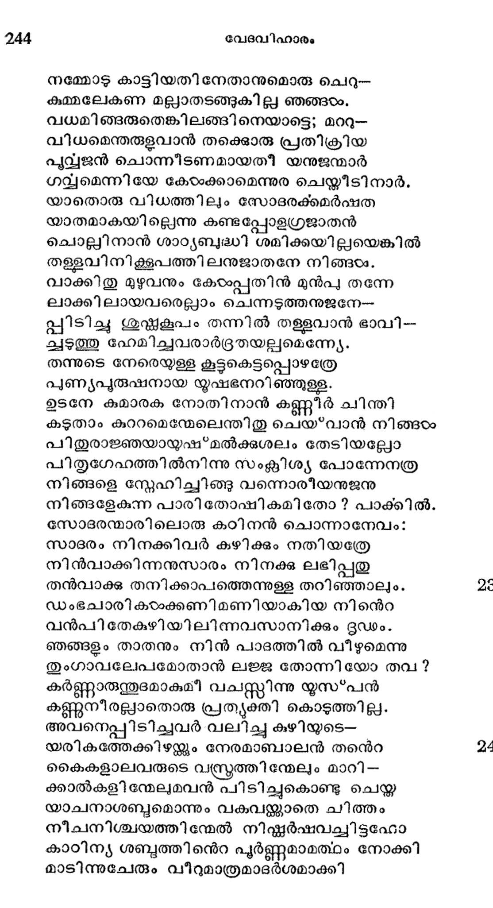
അധ്യായം 87
കനിഷ്ഠ സോദരന് കൈയകാററി ഭൂരെപ്പോക്കി
കുനിഷ്ഷര് കുഴിക്കുള്ളില് തള്ളി തദ്വസ്്രം നീക്കി
വീതചിത്രോത്തരീയനായവന് ശുഷ്ഠകകൂപാ--
ഗാധത്തില് കിടന്നിതു നിസ്കൂലഭൂഃഖത്തോടെ.
തന്നുടെ സ്വപ്പവാര്ത്ത ദുര്ന്നയനിധികളാം
തന്നുടെ സഗര്ഭ്യരെ വിന്നമാക്കിയതതി--
മന്ദബദ്ധിത തന്നെയെന്നവന് മനതാരില്
ഖിന്നതയോടു തോന്നിവന്നിതു നിരന്തരം.
ശുഷ്കളൂപത്തെക്കാള മഗാധമായിട്ടള്ള
പുഷ്കല നിരാശയാം പാതാളക്കുണ്ടിലാണു
ഭുഷ*കൃതവിമാ/ഥിയാം ദൈവത്തെ നോക്കിയവന്
നിഷ*കളങ്കതയാര്ന്ന മനസാ പ്രടത്ഥിച്ചേവം:
ദീനസന്്രാണൈകാത്ഥനിരതനാകും മമ
മാനസവേദി മീതെ വിളങ്ങും സവ്വേശ്വരാ!
സോദര പരിത്ൃക്തനായി മറെറാരു സാഹ്യ-
മീധരണിയിലില്ലാതുള്ളൊരി സ്റ്റാധവിന്മേല്
കാരുണ്യാംബുധേ! തവ കടാക്ഷം പതിപ്പിക്ക
ചാരുവാം നിന്െറ ദിവ്യ വെളിച്ചം ശോഭിപ്പിയ്ക്കു.
ഘോരമാ മാപത്തിനന്െറ വഴുതല് പ്രദേശത്തും
സാരമാമുന്നുകോലായ്' നിള്ലന്നു ചിൽക്കാതൽ നീ.
അന്ധകാരത്തില് വിദ്യല് പ്രദീപം: പുഷ്ഠിനല്ക--
മന്ധസ്ത ദാരിദ്രത്തിന് പരയാം കോടി തന്നില്.
സുജ്ഞാന മജ്ഞാനത്തില്; ജീവാതു മരണത്തില്;
പ്രജ്ഞാനസ്വരൂപി നീ യെന്തിനിജ്കലാതുള്ള.
ഇക്കുഴി തന്നിലിവന് ദുഃഖിയായ* കിടക്കുവാന്
ഭക്തരക്ഷകാ! ഭവാന്! വിധിച്ചോ നിഷ്*്കാരുണ്യം.
നിന്തിരുവടിയുടെ നിയോഗംമുൂലമെന്ന്യേ
നിന്തിരുപദഭക്തക്കാപത്തു ഭവിക്കില്ല.
അതിനാലാശ്വാസമായ* മരിപ്പാനടിയന്നു
വിധിനല്കണം വിധാതാക്കയുക്കു വിധാതാവേ!
ഇഠററപ്പാമ്പുകളുടെ ചീററങ്ങഠം കേരുക്കുന്നു ഞാന്
പോററുവാന് കഴിവില്വാ ഘോരമാം പൈദാഹവും.
ദീര്ഘമാം യാത്രയാലും ഭ്രാതാക്കടം ശരീരത്തെ
നിര്ഘ്ടണം ഫേമിക്കുക മൂലവു മനങ്ങുവാന്
പോലമല്പവും കഴിഞ്ഞീടാതെയിക്കൂപത്തി
ലോലോലക്കണ്ണീര് വാര്ത്തു കിടക്കുന്നിവനയ്യോ.
ഭ്രാതസ്നേഫവും പിതൃസ്പേഹവു മിബ*ഭ്ൂരമിയില്
വീതസൈ്വൈര്യങ്ങളായിക്കാണുന്നു ഞാനിന്നേരം.
മനസ്സിന് ഭാവഭേദ മശക്തിയിവകൊണ്ടു
കനത്ത ദുരവസ്ഥയിവ്ക് ഭവിക്കുന്നു.
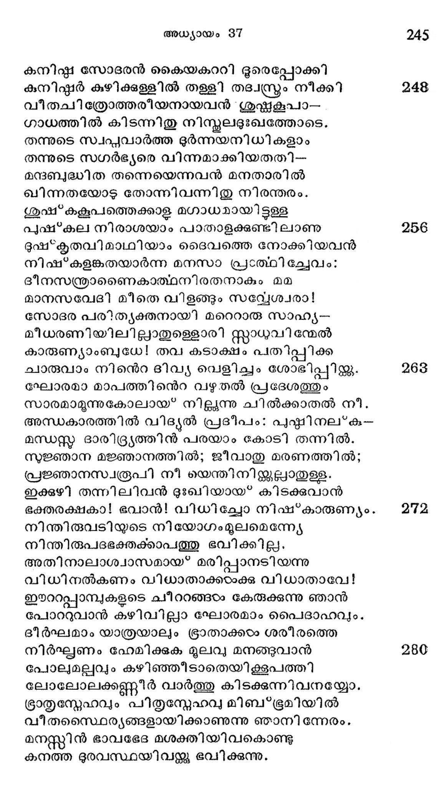
ഭിന്നോപവര്ത്തനനാം താതനിത്തരുണത്തില്
സന്നനാമിനിയ്കലൊരു സാഹ്യമെങ്ങിനെ നല്കും?
എങ്കി ലുമെട്ടിക്കിലുമേതു കാലത്തുമൊരു
ഭംഗമെന്നിയേ സല്ലവ്യാപക്ചൈതന്ൃനായ*
നില്ലൊരു നിനക്കു മത്സംകട പാശം കേരദി-
ചല്വമല്ലാത്ത രക്ഷനല്കുക ലഘു സാദ്ധ്യം.
പരത്തു, പാഴ*ക്കി ണററില് പാവം ഞാന് കിടന്നേവം
കരിക്കു വേണമെന്നാണവിടേയ്ക്കിഷ്ടമെങ്കില്
അതിന്നും മടിയില്ല ദൈവേച്ഛ സാധിച്ചിട്ട
മൃതിക്കു ഭോജ്യമാക നന്നുതാന് മറേറതിലും.
ഈദൃശമവന് ദൈവഹൃദയമുരുകുമാ--
റാദരപുവ്വമഭ്യത്ഥിപ്പൊരു ലേളതന്നില്
രൂബകനൊഴിച്ചുള്ള സോദരര് ഭക്ഷണാത്ഥം
ഭൂമിയിലിരിക്കുന്ന നേരത്തു ഭൂംസ്ഥലാല്
മിസ്രദേശത്തിലേക്കു പോകുന്ന സാത്ഥമൊന്നു
ഭൂശ്യമായ് കണ്ണില് ചോരയററ സോദര്യര്ക്കഹോ.
അനര്ഘതരമാകുമോഷധി വിശേഷങ്ങ--
ളനല്മുണ്ടാകുന്ന ഗിലീദ നാട്ടില്നിന്നും
ആക്രമുപരിമളമോലുന്ന ഗന്ധ്ര്രവ-.
യോഗങ്ങടം ഭീമാകാരഭാണ്ഡങ്ങളാക്കീട്ടവ
ചന്ദ്രാര്ഭ്ധഭൂഷാശുംഭല്കഞ്ബങ്ങളാകുമുഷ്--
വൃന്ദത്തില് പുറത്തേററി വാണിജ്യ സമുദയം
സ്വര്ണ്ണകണ്ഡലങ്ങളും മാലകാം, രക്താംബര.-
മൂര്ണ്ണവ്സ്രങ്ങളിവ സ്വസ്ഥാനങ്ങളിലാര്ന്ന
നേതാക്കളോടുകൂടി വരുന്ന കാഴ കണ്ടു
മോദാകുലാത്മാക്കളായി സ്രയേൽ കുമാരന്മാർ.
അപ്പൊഴോതിനാന് യൂദാ: മല്സഗര്ഭൃരേനമു-
ക്ല്മല്ലാത്ത ഭാഗ്യം വന്നിഹകരേറുന്നു
ഭൂരെനിന്നാഗമിക്കും സാത്ഥമായതു മിദ്ൃയാന്--
കാരോട മേളിച്ചുള്ള യിഷ്മജദ്േല്ഗണമത്രേ.
നമമുടെ കനിഷ്ഷനേ കൊല്വതിലെന്തുലാഭം ?
നമുടെ കളേബരമാംസാംശമല്പോയി വന്.
ഇവനേ സാത്ഥത്തിനു വില*ക്കുകില് ബഹൂുലാഭം
നവമായ കിടച്ചീടും വധദോഷവുമില്ല.
സോദരരിതുകേട്ട നല്ലതെന്നംഗീകരി--
ക്വാ ദരകര്മ്മത്തിനായാശു കോപ്പിട്ട നിന്നു.
ഇത്തിരി നേരംകൊണ്ടു സാത്ഥമാ മിഷ*മയേല്ൃ--
രെത്തിനാരവിടത്തില്ത്തുംഗധാടിയോടും
തല്ക്ഷണമുരചെയ്താന് യഹൂദാ സാത്ഥത്തോട$ു
കാല്ക്ഷണമിരിന്ക്കുവിന്, നല്ലൊരു ചരക്കിതാ
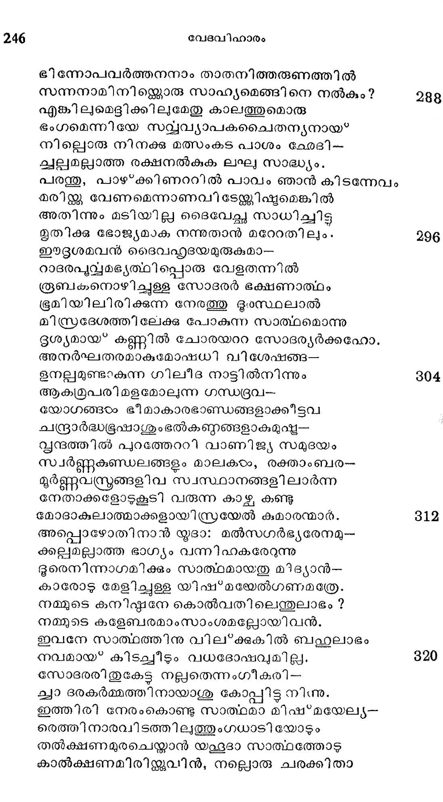
വില്ക്കുവാനുണ്ടു ഞങ്ങാംക്കായതു മേടിച്ചുകൊ-
ണ്ടുഠംക്കളം കുളര്ത്തങ്ങു പോയിടാം നിങ്ങഠംക്കുടന്.
എന്താണു ചരക്കെ്നുെ സാത്ഥവാഹകന് ചൊന്നാൻ
ബന്ധുരരൂപനൊരു യുവാവെന്നുത്തരിച്ചാര്,
എങ്ങിനെ ലഭിച്ചെന്നു ചോദിച്ചനേരം ഞങ്ങ---
ളിങ്ങോട്ട വരുംവഴി കിട്ടിയെന്നുരചെയ്താര്
മാനുഷച്ചരക്കുകൊണ്ടുള്ളോരു വ്യാപാരത്തില്
മാനസത്തിനു നല്ലോരായമില്ലെന്നു ചൊല്ലി -
ത്തീരവേ യൂദാ ചൊന്നാൻ മിസ്രയിലുദ്യോഗസ്ഥ--
രാരുമേ മുത്തി ക്കൊണ്ടു വാങ്ങിടുമടിമയെ
നല്ലതാം വിലതരുമാകയാലത്യറഭായ-
മല്ലാതെ ചേതമുണ്ടാവില്ല യീവ്യാപാരത്തില്.
കാണട്ടെ അടിമയേ യെന്നോതി വണിക്കപ്പോഠം
കാണിച്ചാരമ്ുവില് നിന്നേററിയക്കുമാരനേ:
വില ചൊല്ലക; കൃമ്യം മുപ്പതു വെള്ളി വേണം
വിലയേറിപ്പോയ്* വേണ്ടാ ഞങ്ങടംക്കിയടിമയേ.
പതിനഞ്ചേകാം മനസ്സരണ്ടങ്കില് തരിക നീ--
യതിനൊന്നിനും ഞങ്ങഠം സമ്മതിക്കുകയില്ല.
പറഞ്ഞും പിണങ്ങിയും വില പേശിയ്യം യദാ
നിരങ്ങിയിരുപതു വെള്ളി സമ്മതിപ്പിക്കാന്
ചുറഞ്ഞു പരിശ്രമിച്ചീടുടമ്പോടം ചരക്കിനേ
കുറഞ്ഞ തരമാക്കി ചൊല്പിനാന് സാത്ലവാഹന്.
കാണുന്ന ബാഹൃഭംഗി മാത്രമേയ്ള്ള ജോലി--
ജ്യരാണുങ്ങഠം വല്ലോരെയും തേടണം ഗൃഹേശന്മാര്.
ഉണ്ല്ലാം വെടിപ്പിനു കഴിച്ചു പിതുരമെ
വാണുള്ള പിള്ളരെക്കൊണ്ടി ല്ലൊരു പ്രയോജനം.
മേലെല്യാം മിനുക്കീട്ട മുടിയും ചികി വ്രന്രം
ചാലവേ ചാര്ത്തിപ്പച്ചപ്പരി ഷകാരികളായി
രസികത്വവും ഭാവിച്ചങ്ങിങ്ങു നടന്നിടും
ബിസദൂര്ത്തികളെങ്ങും വിലപ്പോവുകയില്ല.
വല്ലതുമൊന്നു ചെയ്വാന് സ്വാമികളാദേശിച്ചാല്
പല്ലിളക്കുന്ന വാക്കു ചൊന്നിീടുമിക്കൂട്ടക്കാര്.
അല്ലെങ്കിലരയോ കാല് ഭാഗമോ ചെയ്യുമതു
നല്ലതായ*വരാ കര്മ്മ കഴശല്യ മില്ലായ”കയാല്
തൊട്ടിലിലിട്ടു പയ്യെത്താലോലപ്പാട്ട പാടി-
യാട്ടിയങ്ങുറക്കേണ്ട പിളളരേ വ്യാപാരാത്ഥം
കിട്ടിയാലാരും വില തന്നു വാങ്ങുകയില്ല
നഷ്ടമുണ്ടാകേയള്ള ശ്രേഷ്ഠികഠംക്കെല്ലായ്ോഴും.
ഉടനേ യൂദാ സാത്ഥവാഹദന വിളിച്ചേറ
മടവില് കൊണ്ടുപോയി യൂസ്ററ സല്ഗുണഗണം
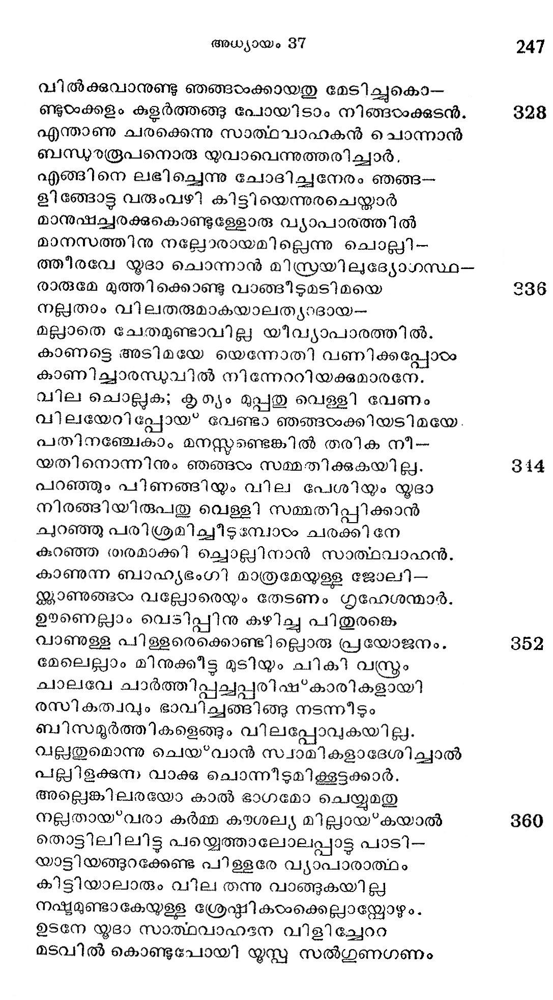
വിസ്മരിച്ചുരചിട്ടം വിംശത'! വെള്ളിമാത്രം
പ്രസ്മത സാത്ഥവാഹന് കൊടുത്താൻ യൂദാ പക്കല്. 888
ടദൈവപത്രനേ വിററ യൂദ ശരിയിട്ട
കൈയപ്പിലാ യൂദേ! നിന്നുടെ നിര്ദ്ദോഷിയാ--
മോമനക്കനിഷ്ഠടനേ വിറാതിന് വിലയിതോ?
കോമരമായില്ലേ? നീ യീര്ഷാുയ്ക്ക; പിശാചിയാം
അവളേകുന്ന സമ്പത്തിതുവോ? പണമിതു
ഭവനേശ്വരന് തീരെ വെറുക്കും ധനമല്ലൊ.
ഇതു താന് നൌെടിയോരു ലോഹശൂലമായ* തീര്ന്നു
സുതരാം തുളച്ചീടും ഭാവല്ക്ക ഹൃദയത്തേ. 866൫
അടിമച്ചെറുക്കന്െറ വിലയാമീ വെള്ളിയാല്
മടിയെ ബ*ഭാരമാക്കും നിങ്ങളാണസ്കക*പന്മാര്.
ഈ വെള്ളി ശീഘ്രംതന്നെ തുലയും യുഷമല്കമ്മ--
മീവിശ്വമുള്ളകാലം കിടക്കം പൊടിയാതെ
സ്വന്തസോദര വ്യാപാരത്തിനാൽ കളങ്കിതോ-
ഭന്തരാം നിങ്ങടം നിത്യം ചരിത്രസ്ഥിതരാവൂ.
സാമാന്യവില കൊടുത്തീയനോപമനാകും
കോമള കുമാരനെ കിടിയ വിഷയത്തില് 884
കോഹിനൂരൊരു കാശുകൊടുത്തു വാങ്ങിച്ച കയ--
തൂഹലമോടും മിദ്യാന് സാത്ഥവാഹക സംഘം
ഈജിപ്ിലേക്കു ചെന്നുചേര്ന്നുള്ള മിനിററിലാ-
രാജപത്തനമതിൽല് പാര്ക്കുന്ന മഹാമാന്യന്
ഭൂപാലകാംഗരക്ഷാ സൈന്യാധിനാഥന് ധീരന്
സ്വാപതേയത്താല് വാങ്ങി സാമോദം യോസേഫിനെ.
സോദരരത്ന മല്വിലയ്ക്കു വിററശേഷം
യുദയ്യം കൂട്ടുകാരും കിട്ടിയപണം തമ്മിൽ 892
ഭാഗിച്ചു കൊടംവാനിരുന്നടിയൊന്നൊഴിച്ചന്ന്യ--
ഭാഗങ്ങഠം പൂത്തിയാക്കിക്കഴിച്ചാരൊരു ശണ്ണ.
തദനന്തരമെങ്ങോ പോയിരുന്നൊരു രൂബ-
നവിടെയെത്തിക്കൂപം തന്നില് തന്നനുജനേ
കാണായ*കമൂലം മഹാ സങ്കടത്തോട വന്നു
തൂണുപോല് സ്ഥിതിചെയ്യു മനുജന്മാരോടേവം
ഓതിനാന്: കുഴിയില് ഞാന് കുട്ടിയെ കാണുന്നില്ലാ
ഏതൊരു വഴിയിനി തീരക്കിപ്പോയീടേണ്ടു ? 400
പ്രീതിക്കു ഭാജനമാം പുത്രനേക്കൂടാത ഞാന്
താതനന്െറ സവിധത്തില് ചെലുവാനെളതാമോ?
എയ്തുചെയ്തവനോട നിങ്ങളെ നഅരഴ്്ചവിന്
വെയ്തുരുകുന്നു മമ മാനസമയ്യോ കഷം.
താവക കോപശാന്തി ചെയ്തിട്ട കുമാരനെ
കൂപത്തില്നിന്നു രക്ഷിച്ചീട്വാന് കരുതിനേന്..
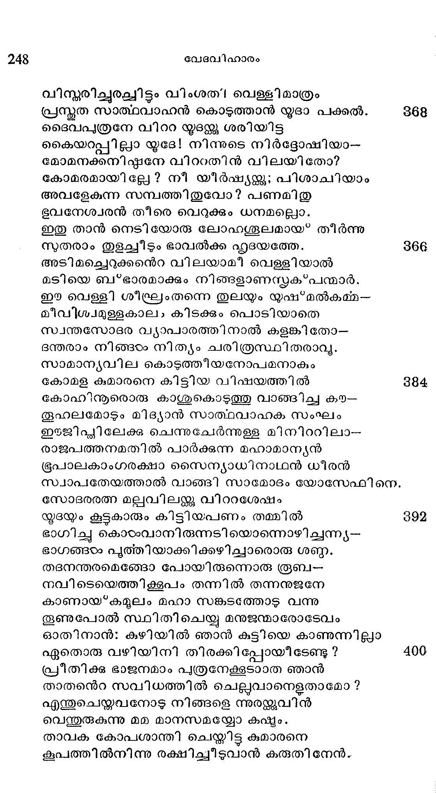
ചേടിക ശേഖരിച്ച കാശെട ത്തെലി തന്െറ
പോടി ലാക്കുന്നവണ്ണമരുമ ഭ്രാതാവിനെ
കൂടലര് മണിയാകു മേതൊരുത്തനാണെ*-
ത്താടലെന്നിയേ കൊണ്ടുപോയങ്ങു മറച്ചതും ?
ഇങ്ങിനെ വിലപിയ്ക്കും രൂബനോടനുജന്മാര്
മങ്ങി നമുഖത്തോടുകൂടെയാ വ്യാപാരത്തിന്
സംഗതി കഥിച്ചപ്പോടം സംഭൂമ മനസ്തനായ
സങ്കടവങ്കടല്ക്കഠംപതിച്ചാന് പരാധീനന്.
ഇമ്മഹാ സാഹസത്തിന് ഗയരവം നിനച്ചവ--
നുഞ്ജയില് തൂഷ്ണീകനായിരുന്നാന് ക്ഷണനേരം.
ഇല്ലൊരു പരിഹാരമതിനുമെന്നു കണ്ടി --
ടല്ലോടനുജരുമായവനാലോചിച്ചു
താതനന്െറ സന്നിധിയില് നില*ക്കുവാനൊരു തന്ത്രം
കാതര്യമോടും കണ്ടുപിടിച്ചു കാലദര്ശ്ി.
കത്തി കൊണ്ടവരൊരു ച്ലാഗവത്സത്തിന്കണ്ണം
കര്ത്തിച്ചു തലുല്ലന്ന രക്തത്തില് യൂഷഭന്െറ
ചിത്രവര്ണ്ണോത്തരീയം മുക്കിയിട്ടതുകൊണ്ട--
ങ്ങെത്തിച്ചു പിതാവിന്െറ നികടേ പുത്രവ്രജം.
ഞങ്ങളീ മരുഭൂവില് സഞ്ചരിക്കുന്നനേരം
സംഗതിവന്നൂ കാണ്മാനിങ്ങനെയൊരു വ്രസ്രം
ആയതു യൂഷഭനന്െറ വകയല്വചയോയെന്നു
സ്വീയദൃഷ്ഷിയാല് നോക്കിയറിക ജനിതാവേ!
ഈ ദൂശമൊരു ഭുതും യല്കിനാരതു താത-
പാദരോടറിയിച്ചാന് സന്ദേശഹാരിയേകന്.
വര്തരത്തില് ദൂഷ്ടമിചെന്നു പതിച്ചതോട നിശി-
താസ്ത്രമൊന്നാഞ്ഞു കേറീ കരളിൽ യാക്കോബിന്നും.
മോഹിച്ചു വീണാന് ഭൂമയ തൊഴിച്ചാന് മുറയിട്ടാ--
നാഹനിച്ചംഘ്രി ബാഹുദ്വയങ്ങഠം തറസ്റ്കുമേല്.
എങ്ങിനെ കുമാരാ! നീ മരിച്ചു നിന്െറ ജീവ-
നെങ്ങിനെ തങ്കപ്രഭ ചിന്തുമാദേഹം വിട്ട?
പൊന്നിനന്െറ പൊടിപോലെന് മടിയിലിരിക്കവേ
വന്യസത്വങ്ങരക്ളൂണായ* തീരുന്നതേതുകൊണ്ടും
സോദര സ്നേഹത്തേക്കാടം വലുതല്ലെന്ന തത്വ-
മാദരിക്കുക മൂലമാണു നീ മരിച്ചതും.
എന്നുടെ ഭുഃഖത്തേക്കാഠം സോദര സ്നേഹത്തേ നീ
മാന്യമാണ്്ചരുതിയതുചിതമായോ പുത്രാ!
ആകന്മികാത്യയമാം നിന്നുടെ മരണത്താല്
ശോകവി ഹ്വലനായി ഞാനിതാ വലയുന്നു.
എന്നുടെ തീവ്രദുഃഖം ഗൃശാനത്തിങ്കലല്ലാ
തെന്നുമേ യടങ്ങുകയി ല്ല സംശയം വേണ്ടാ.
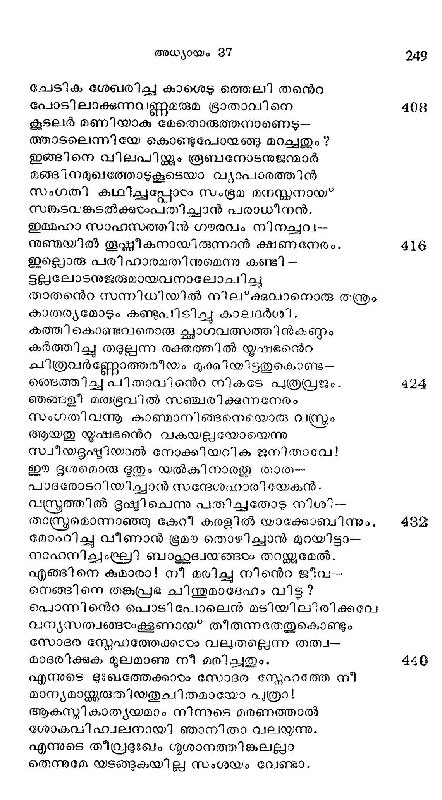
ഇസ്രടയലേവം തന്െറ തനയന് യോസേഫിനെ
ഹി എസ്രജന്തു തന് ദംഘഷ്മാദാരിതനെന്നുറച്ചു
ശ്രോത്ണാം ഹൃദയങ്ങളരുകും മട്ടിൽ ബഹു
രോദനംചെയ്ത വിലപിച്ചുകൊണ്ടിരിക്കഭവ
പുത്രിമാര് പത്രന്മാരുമാശ്വാസ മുളവാക്കാന്
വ്യത്ഥമായ* ശ്രമിചിതു ബഹുലം ദിവസങ്ങംം.